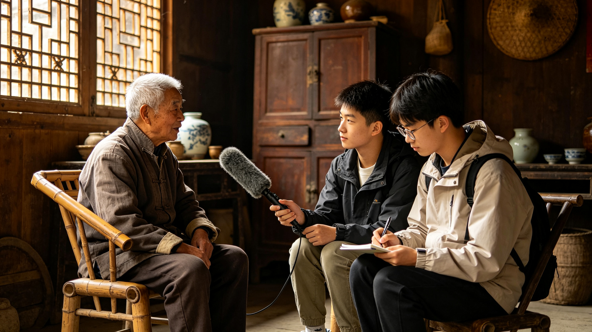
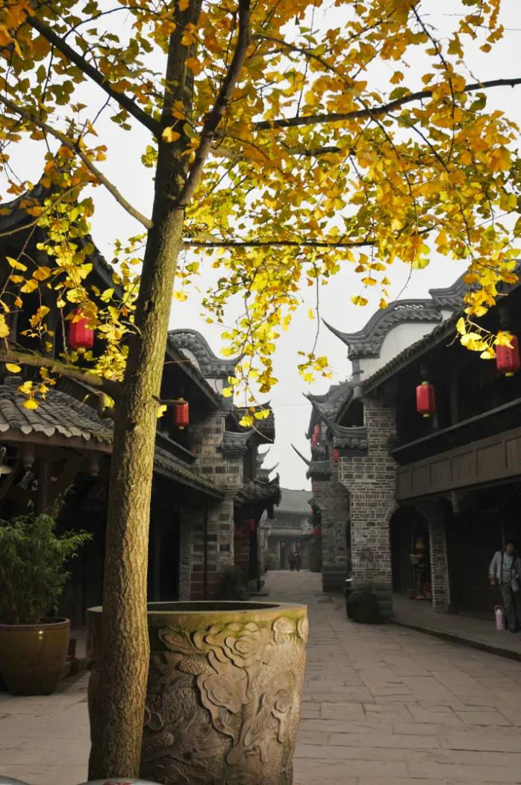
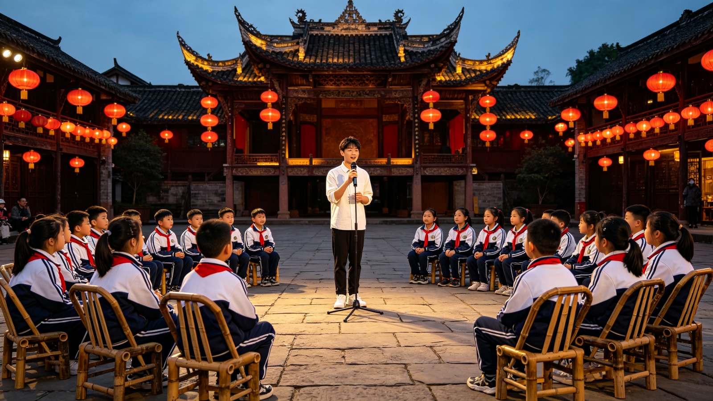
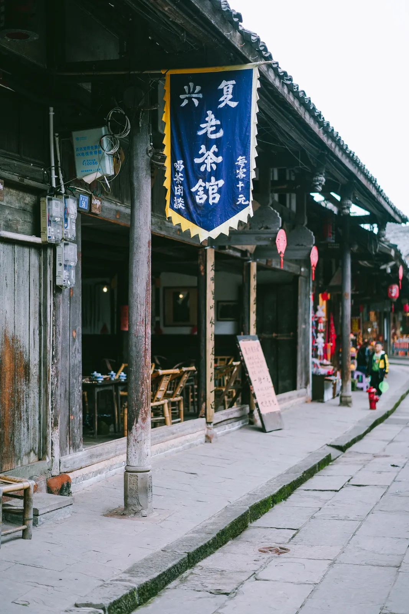
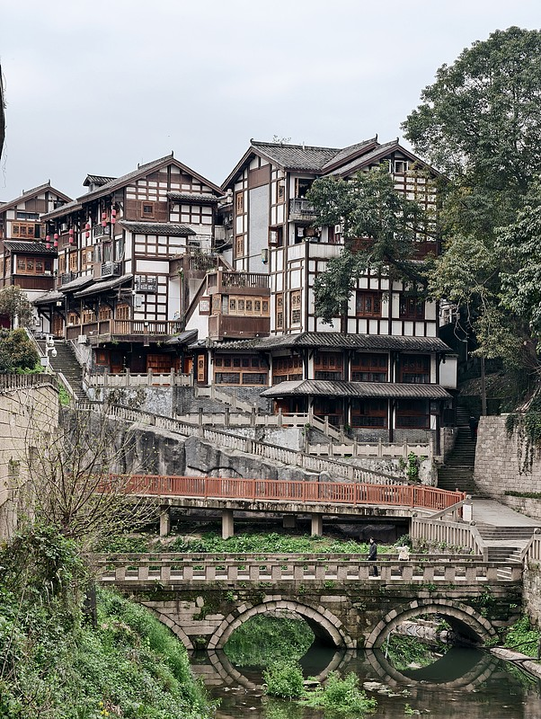
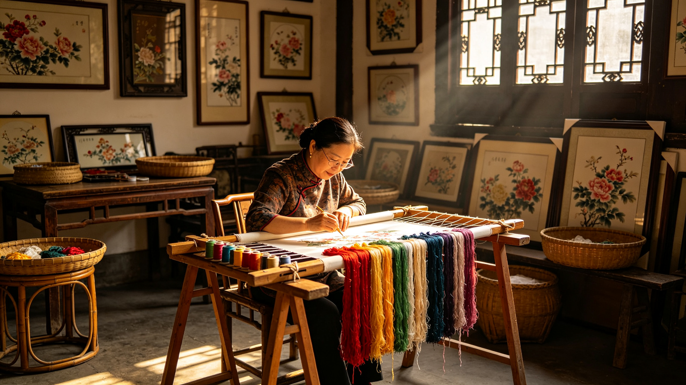

01在地口述档案采集制作
实地访谈、录音采集、脚本整理、多版本配音与字幕文稿归档，输出可用于博物馆与文旅平台的原生声音档案，抢救留存在地记忆。

高校传媒专业 × 地方文旅 · 项目 Demo
有声叙事 · 让地方文化被听见
以播音主持与广播电视编导专业力量，为古镇、非遗与乡村文旅生产「有温度的有声内容资产」——口述档案、故事化有声导览、新媒体内容与线下文化体验，补齐文旅软性内容短板。
行业痛点
大量古镇、非遗点位与乡村文旅拥有丰厚历史资源，却普遍「重硬件建设、轻软性内容创作」：机器合成语音讲解、教科书式文案、宣传展板与官方宣传片——叙事生硬，难以触达年轻游客。
通用导览多为 AI 机器语音，文案枯燥，缺少传承人原生口述与人文故事。
官方公众号、展板、纸质手册难以打动年轻游客，短视频与音频收听已成为主流渠道。
商业广告公司不熟悉本土历史文脉，产出内容浮于表面；政府团队又缺年轻化表达。
传承人、老街居民的活态民间记忆正随岁月消散，缺少抢救性记录。
我们的回答
不做硬件、不开发大型商业 APP，专注内容创意服务——线上视听内容矩阵负责传播引流，线下文化体验活动负责承接转化，形成完整闭环。
核心服务产品
服务对象：区县文旅单位 · 中小型博物馆 · 非遗工坊 · 古镇运营企业 · 乡村文旅示范点。

01实地访谈、录音采集、脚本整理、多版本配音与字幕文稿归档，输出可用于博物馆与文旅平台的原生声音档案，抢救留存在地记忆。
针对景点点位制作科普版、少儿版、文艺叙事版等多套音频讲解，可直接对接合作方小程序、H5 导览系统使用。
文旅纪实短片、AIGC 非遗漫剧、科普短视频，账号代运营与矩阵分发，用年轻化叙事降低传统文化理解门槛。

04古镇打卡剧本、非遗口述故事会、研学任务包、现场主持与演绎，把音频故事延伸到实地，实现「线上听故事，线下实地体验」。
标准化生产流程
从田野调研到交付成品，全程文史顾问把关史实、三级审核内容，兼顾文化严谨性与传播趣味性。
标杆落地场景
项目优先打磨川渝本土古镇与非遗标杆案例，沉淀可复制的服务流程与作品集，再向更多区县复制推广。

历史文化街区千年古镇的市井烟火：盖碗茶、龙门阵、古码头。以茶馆为中心点，采集老街居民口述，制作文艺叙事版与少儿探秘版有声导览。

古镇运营企业依山傍水的巴渝吊脚楼建筑群，承载码头文化记忆。制作建筑故事化导览与文旅纪实短片，帮助游客「听懂建筑背后的故事」。

非遗工坊走进绣坊，录制绣娘六十年学艺口述档案；AIGC 辅助生成非遗漫剧分镜初稿，经人工改写后制成科普短视频与研学任务包。
商业模式
面向文旅单位、非遗工坊与文旅企业获取收益，不以 C 端游客为盈利来源；轻资产运营，单位创作成本随项目增多持续摊薄。
承接口述档案采集、有声导览全案、短视频/漫剧制作、线下活动策划执行，按项目包干制报价收费。
为合作文旅主体提供账号内容策划、脚本撰写、视频剪辑发布的月度代运营服务，按月收取费用。
制作完成的内容资产在约定范围内授权使用；针对既有成果提供二次改编、多版本再创作服务。
未来展望
打磨标杆案例，完善服务流程，搭建作品集，实现收支基本平衡。
扩大合作版图，打造区域有知名度的文旅内容创意服务团队，实现稳定盈利。
团队构成
成员全部来自播音主持、编导专业，覆盖调研、脚本、访谈、配音、后期与活动策划全链条。
统筹项目整体规划与商务合作，把控项目方向、调研与进度管理，对接指导老师与合作单位。
丰富访谈、出镜主持经验，负责田野采访、现场主持、多风格配音，把控语言表达与音频录制质量。
擅长叙事类文稿朗读，负责少儿向版本音频录制与线下活动现场主持，把控活动氛围。
实地调研、文史资料查阅、访谈提纲设计、脚本撰写与分镜策划，负责内容文化严谨性初审。
短视频与 AIGC 漫剧脚本创作、新媒体内容策划、平台内容排期与账号运营。
录音后期混音、降噪剪辑；短视频拍摄与素材整理归档。
视频剪辑与包装、AIGC 素材生成与人工精修、图文排版与物料制作。
线下研学打卡剧本与任务包设计、活动流程策划、海报图文视觉物料设计、现场执行。
可外聘文史/非遗领域顾问审核史实；联动计算机专业同学按需完成轻量化 H5 演示载体开发。
技术载体方面：不自主开发大型 APP，内容成品交付后可直接复用合作方现有 H5、小程序；依托学校演播室、录音间与摄影设备即可完成生产，人员、技术、工具均具备落地可行性。
产品 Demo · 故事化有声导览
模拟合作方 H5 / 小程序中的有声导览体验：为同一内容点位制作多版本音频素材。下方为项目已完成的样片——点击播放，感受「说明书式讲解」与「故事化有声叙事」的差别。
项目档案 · 商业计划书要点
「声叙文脉」有声叙事赋能地方文旅——新媒介下在地文化传播服务项目。高校传媒专业力量赋能本土文旅，聚焦非遗与在地文化有声内容资产制作、文旅品牌全媒体整合传播与线下沉浸式场景打造。
项目概述
核心输出是文旅内容创意服务，不售卖硬件、不开发独立商业 APP——「内容为本，技术为辅」，文化叙事严谨度放在首位。
依托编导专业完成调研、脚本、分镜；播音专业完成访谈、录音、多风格配音与混音；AIGC 仅作辅助工具，全部产出经人工改写、审核。
叙事创新（说明书升级为故事化口述）· 资源创新（聚焦口述声音档案）· 形式创新（AIGC + 线下实景联动）· 模式创新（高校艺术专业赋能地方文化，文化严谨与传播效果并重）。
抢救留存在地口述文化资源；赋能文旅产业升级；创新「高校传媒专业 + 地方文化保护」可复制路径；推动传统文化创造性转化。
产出的音频、视频交付合作方用于小程序、公众号、现场二维码导览与宣传推广，形成「线上内容传播引流，线下实地体验承接」闭环。
市场分析
文旅行业已从「拼硬件、拼风景」进入「拼内容、拼体验」阶段；文旅音频、口述档案、研学体验是细分赛道，专门做本土口述文化内容生产的服务商较少。
| 对比维度 | 文旅单位内部部门 | 商业广告/传媒外包 | 通用导览平台 | 其他大学生项目 | 声叙文脉 ★ |
|---|---|---|---|---|---|
| 内容深度 | 掌握一手文史 | 理解浅、易流于表面 | 网络摘抄、模板化 | 重技术、内容薄弱 | 田野调研 + 文史双重审核 |
| 一手口述档案 | 缺少采集能力 | 少做深度访谈 | 无 | 普遍缺失 | 核心特色，抢救性记录 |
| 新媒体表达 | 偏官方严肃 | 经验丰富 | 成熟技术 | 贴近年轻受众 | 专业视听表达 + 年轻化叙事 |
| 定制化能力 | 编制有限、效率低 | 项目经验丰富 | 标准化模板 | 多为公益展示 | 一项目一调研、一客户一方案 |
| 成本与可持续 | 体制内稳定 | 报价昂贵 | 规模化 | 难长期运营 | 报价友好，轻资产可持续 |
财务与融资
首年财务测算为比赛模拟合理数据；无厂房、大型设备等高投入，主要支出集中于版权素材、AI 会员、差旅与团队劳务补贴。
总营收 7.5 万元 · 直接运营成本 4.875 万元 · 毛利率 35% · 年度净利润 1.8 万元 · 净利率 24% · 静态投资回收期 4 年。
固定成本（素材会员、AIGC 订阅、设备折旧、云存储）+ 变动成本（差旅、授权、物料）+ 人力成本（项目绩效/劳务补贴）+ 营销商务成本。
引入战略合作资金 80 万元，出让股权 25%，全部用于项目运营、无债务；资金按 30/20/20/10/20 分配至内容研发、商务推广、合规建设、客户服务与人力运营。
年度分红退出（盈利后按年分红，3–5 年收回本金）；股权回购退出（运营满 5 年按「本金 + 年化 8–10% 溢价」回购）；并购退出（对接文旅企业并购）。
风险控制
应对：文史双重审核机制；AIGC 执行「AI 初稿 + 人工改写 + 三级审核」；版权合规管理（商用授权资源 + 访谈授权协议）；外采设备双备份与应急预案。
应对：坚持「一手田野口述档案」差异化路线；脚本定稿签字确认、变更走流程；客户多元化布局；内容审核小组与评论区维护。
应对：精细化预算管理、优先复用学校资源；拓宽资金来源（大创经费、竞赛奖金、小额赞助）；以项目养项目；专门财务管理员，账目透明可追溯。